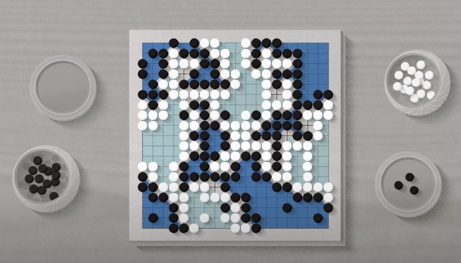

Overview
Go is a board game that originated in ancient China. Today it is played worldwide but has a particularly strong following in China, Japan and Korea.
Rules of Go
Go is played on a grid with black and white stones. It is played by two people, each taking turns to place a stone of their color at one of the intersection points on the grid. Once placed on the board, stones do not move. In order to claim victory, players must coexist on the board with stones of the other color and find a way to surround more points of territory than your opponent.
Learn to Play Go
The rules of Go are very simple, and you can learn them in a few minutes - but they lead to a countless number of intriguing patterns and clever maneuvers. That's why learning to play go is easy, but learning to play well requires much study and practice. The best way to learn, especially at the beginning, is simply to play games and become familiar with the patterns. Online-Go has a online iteractive tutorial that walk through all the basic knowledge of Go.